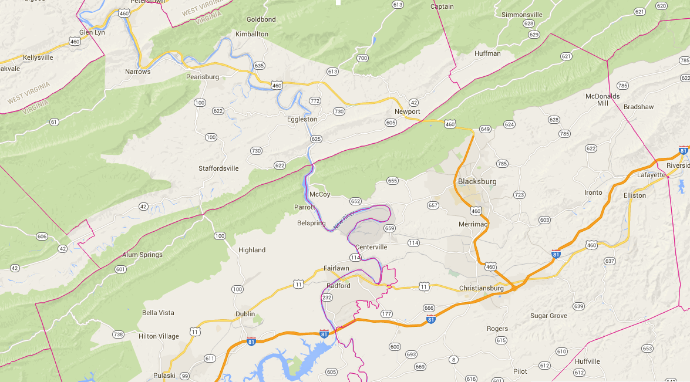

Find a location near you on the map below. Click points to learn more about the locations

Spring 2014
Reading Hour begins in Spring 2014 with three locations in Blacksburg. Participation inlcudes 15 volunteers and 15 children.
Fall 2014
Three additional locations Blacksburg, four locations in Christiansburg, and one location in Shawsville being participation in Reading Hour. Participation grows to 80 volunteers and 98 children.
Spring 2015
Participation numbers reach 100 children
Fall 2015
Reading Hour expands to Radford
Spring 2016
Reading Hour expands into neighboring Giles and Pulaski counties with 19 locations, 140 volunteers, and 127 children participating